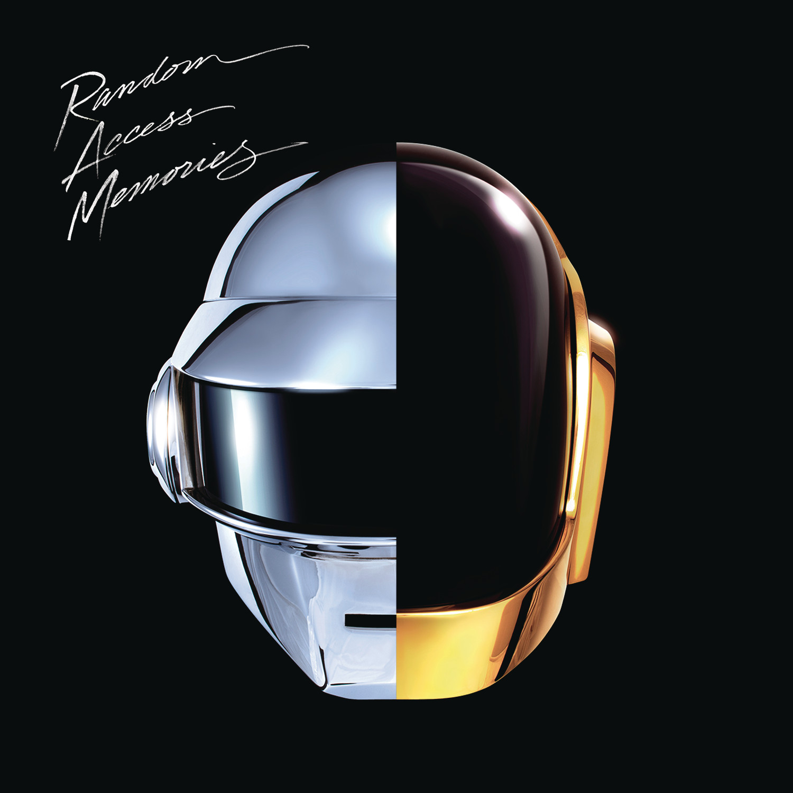
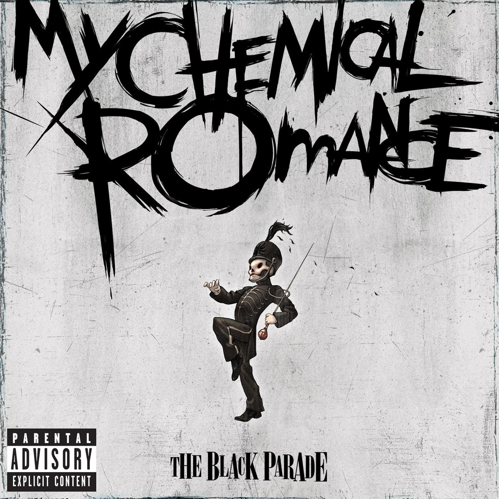

Explore
▾
Home
Genres
Renowned Albums
Renowned Singles
Renowned Artists
Renowned Music Videos
Vocaloids
History of Music
Mordern Music Production
AI and the Future of Music
Forums
Who We Are
Renowned Albums
All
EDM
Rock
Discovery
Daft Punk

Random Access Memory
Daft Punk

The Black Parade
My Chemical Romance
×
Highlight Songs